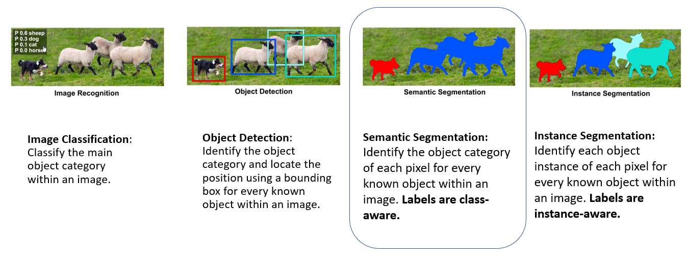
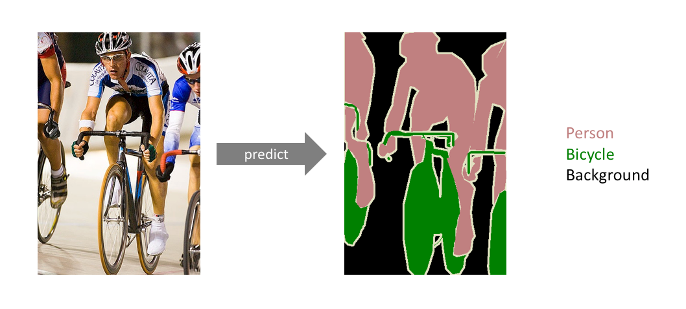
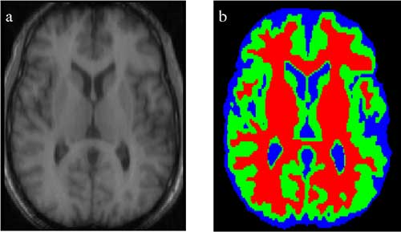

What is Semantic Segmentation?
Semantic segmentation is the task in the convolution neural netwrok to mask similar objects in the image. In this article, we define what is Semantic Segmentation and its use cases.
References:
What are the common approaches to solving image identification problems?
Image identification problems are solved using Convolution Neural Networks. Most common of them are explained in below image.
What we're predicting for every pixel in the image?
It is a form of pixel-level prediction because each pixel in an image is classified according to a category or class label. Since each pixel gets classified, it is also called as Dense Prediction.

Image Segmentation models are useful for a variety of tasks, including:
As the field of convolution neural network evolves, the usecases are going to grow too. Here are some of the known usecases of semantic segmentation model in real time.
- Autonomous vehicles: We need to equip cars with the necessary perception to understand their environment so that self-driving cars can safely integrate into our existing roads.
![Thumbnail [200x250]](images/deeplabcityscape.gif)
- Medical image diagnostics: Machines can augment analysis performed by radiologists, greatly reducing the time required to run diagnositic tests. It identifies important features in medical scans. It is especially useful to identify abnormalities such as tumors or the functioning of the organs 
- Fashion Industry: Semantic Segmentation is used in the Fashion Industry to extract clothing items from an image to provide similar suggestions from retail shops. More advanced algorithms can “re-dress” particular items of clothing in an image.